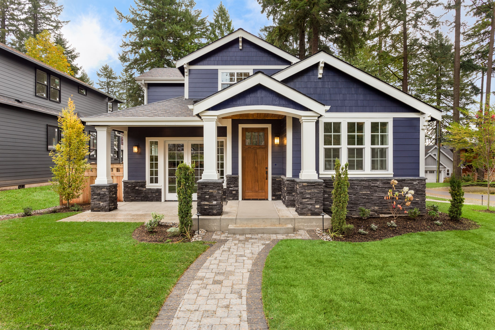

The path to recovery is not a one-size-fits-all directive; it is a deeply personal journey that begins with trust. We reject the model of forced intervention. Instead, we meet our participants where they are—through casual, consistent outreach and the dignity of our mobile services. By fostering authentic, non-judgmental relationships, we create the safety necessary for individuals to open up about their needs. We have found that when we replace stigma with genuine empathy, the desire to change is often already there, waiting for a reliable hand to reach out.
Our role is to be the reliable bridge between readiness and action:
The evidence behind mobile hygiene deployments across California is clear, measurable, and highly cost-effective:
Founder’s Perspective
"I’ve seen how quickly someone ready to change can be defeated by a confusing, cold system. We don't try to replace the medical experts; we act as the essential link. We’ve designed this phase to bridge the gaps that lead to relapse, ensuring that the transition from the streets to professional treatment is handled with the personalized, peer-to-peer support that helps our participants stay on course. We aren't forcing a path; we are clearing one."